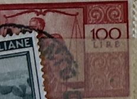
| SOURCE | TITLE| IMAGE MATCH | click to source page |
| eBay | Democratic Lire 100 Varieties Sass. spec. n. 24a ND | eBay | 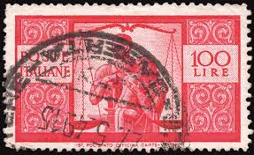 |
| Catawiki | Italian Republic 1950 - Italy at Work 65 lire green sheet with watermark wheel III - Sassone 650/I - auction online Catawiki | 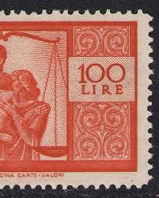 |
| Todocolección | sello stamp italia 1 siracusana 5 lire repubbli - Buy Antique stamps of Italy on todocoleccion | 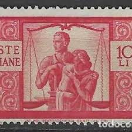 |
| buyhungarianstamps.com | 14 Trieste (Zone A) - 1946 Stamps of Italy, Overprinted (MNH) – Eastern Europe Postage Stamps | Hungaria Stamp Exchange | 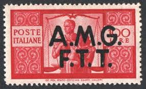 |
| eBay | TRIESTE Zone A 1947 100 Lire Italien issue with overprint mint* $ 55.00 | eBay | 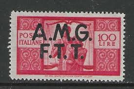 |
| eBay | Italy A.M.G. Venezia Giulia Sc# 1LN13 Mint Original Gum Never Hinged Pristine 🌟 | eBay | 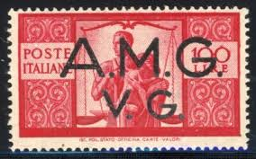 |
| eBay | Italy-Trieste 1947 Sc # 14 Used VF $45 | eBay | 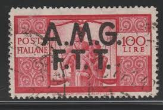 |
| eBay | Italy- 1946 AMG overprint; 100 lira face | eBay | 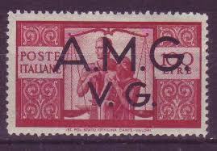 |
| Todocolección | 250799 mnh italia 2010 futbol - Buy Antique stamps of Italy on todocoleccion | 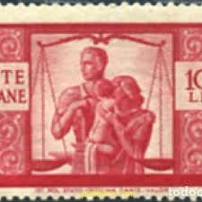 |
| Todocolección | italia - 15 cent - año 1929 - loba amamanta a r - Buy Antique stamps of Italy on todocoleccion | 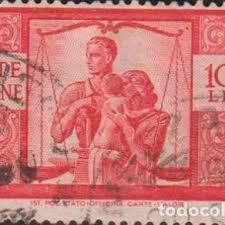 |
| Cambi Auction House | Andy Warhol : Marilyn - serigrafia - Auction AMC - Artist graphics - Cambi Casa d'Aste | 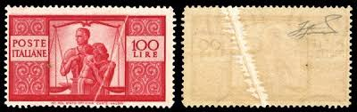 |
| eBay | Italy - Trieste, Scott #14, Overprinted 100l United Family and Scales Issue, MH | eBay | 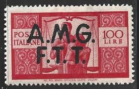 |
| Todocolección | usados italia 1965 - 20º anniversario della res - Buy Antique stamps of Italy on todocoleccion | 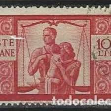 |
| eBay | Trieste Zone A Scott 14 Unused Hinged, Paper Adhesion 2019 cv $55 | eBay | 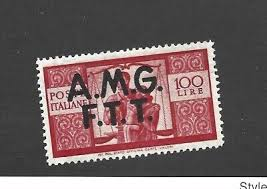 |
| eBay | Democratic Lire 100 Varieties Sass. spec. n. 25 NS | eBay | 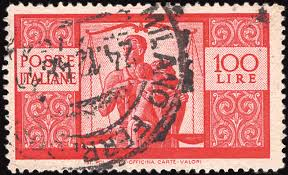 |
| eBay | ITALY Scott, 1LN13, MINT LIGHTLY HINGED, Lot18, Cat $29 | eBay | 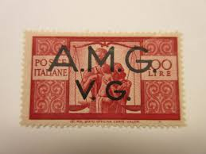 |
| Arpin Philately | Buy ITALY #46 - King Humbert I (1879) | Arpin Philately | 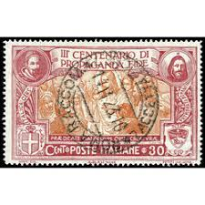 |
| eBay | KAPPYSSTAMPS ID7651 SAN MARINO #32 MINT BK/4 EXAMINE | eBay | 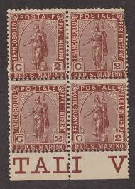 |
| Amazon UK | Prophila Collection Italy 2975 (complete.issue.) unmounted mint/never hinged ** MNH 2004 Postage stamp - ITALIA (Stamps for collectors) : Amazon.co.uk: Toys & Games | 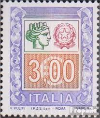 |
| eBay | 1920 GERMANY OVERPRINT SAARGEBIET STUDY VARIETIES ERRORS OVP. MH SCT.42 MI.44 | eBay | 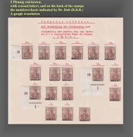 |
| eBay | 705457) Classical, - pane of 25 - Russia - with text on bottom - | eBay | 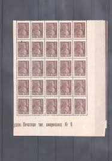 |
| eBay | Italien 1946 Italian Postage Stamps Overprinted A.M.G.V.G. Flugpostmarke | eBay | 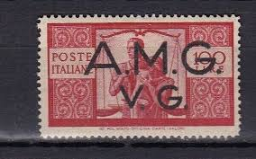 |
| eBay | Italy 1932 YV 291-294 MNH VF | eBay | 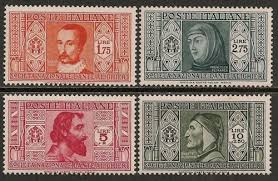 |
| eBay | venezia giulia)1946 Sc 1LN13 MNH v532 | eBay | 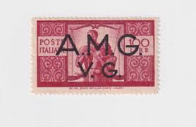 |
| eBay | RHM:BR C-321 1953 Brazil 1,20 CINQÜEN. DO TRATADO DE PETRÓPOLIS/RJ blk. 4 stamps | eBay | 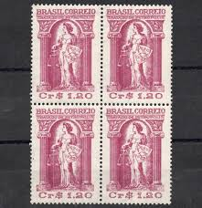 |
| eBay | CHINA PRC 1950 Sc#10 C2 Political Congress Original Print Full Sheet MNH RARE | eBay | 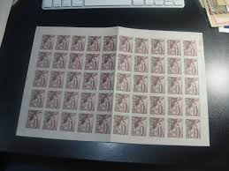 |
| eBay | 993 Railroad Engineers with Prexie #829, #832 EFO on Registered Bank Parcel Tag | eBay | 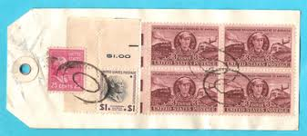 |
| eBay | Italy 1923 MI 166II Sheetpart of 39 stamps MNH VF SCARCE! | eBay | 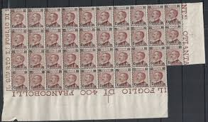 |
| eBay | Italy stamp #1LN13, MH OG, CV $29.00 | eBay | 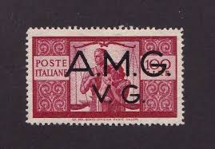 |
| eBay | IT7249 - 1925 Kingdom Pneumatic Mail Block 20 Cent Sas.8 Block MNH/** | eBay | 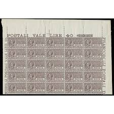 |
| lastdodo.com | Italian stamps with overprint AMG FTT 100 (1947) - Triest - Zone A - LastDodo | 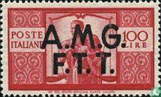 |
| eBay | M.N.H. VATICAN STAMPS SC#243-46 STATUE OF POPE CLEMENT Xlll Block of 4 | eBay | 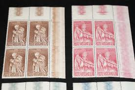 |
| eBay | ITALY STAMP - TRIESTE-AMG FTT - ALLIED OCCUPATION - 1947 - FREE US SHIPPING | eBay | 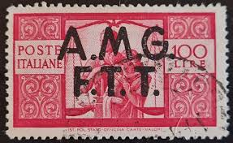 |
| eBay | ITALY 1923 30c IMPERF VERTICALLY 144c, MINT NEVER HINGED RT MARGIN PAIR! $1,600 | eBay | 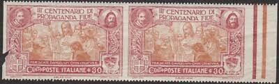 |
| eBay | Vintage stamp collection plate blocks Abe Lincoln, Explorers,survey lot #2 | eBay | 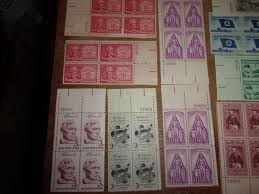 |
| Etsy | 190 Vintage French Stamps / France Postage Stamps / La Semeuse / the Sower / 1910-1920 Journal Ephemera Kit Art Collage Supplies - Etsy | 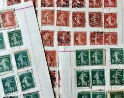 |
| Just Collecting | CEYLON 1885 10c on 24c brown-purple, SG188 — JustCollecting | 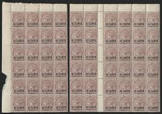 |
| eBay | Italy Egeo - Sassone n. 10 used on piece cv 330$++ | eBay | 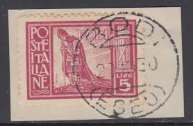 |
| eBay | San Marino 1922 Liberty C.10 Orange Brown New Archive Proof ND N2223 | eBay | 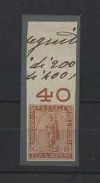 |
| eBay | ITALY Aegean Islands LERO 1932 GARIBALDI set (6 values ONLY) VF MH | eBay | 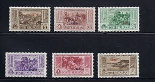 |
| eBay | Leoni Cent. 10 Quarter Variety Double Print | eBay | 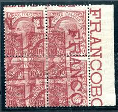 |
| eBay | Democratic Lire 100 six copies watermark NS | eBay | 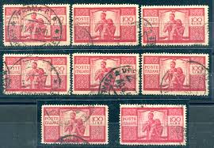 |
| eBay | Italy Egeo - Sassone n. 10 used cv 330$ | eBay | 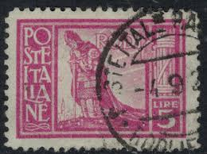 |
| eBay | GERMANY BERLIN #9N81-3 Complete Olympic set in Margin blocks of 4, og, NH, VF | eBay | 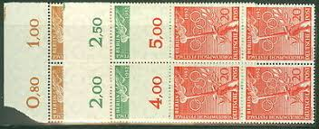 |
| eBay | Sheet Of Stamps - Charlemagne No. 1497 x25 Mint ** Luxury MNH | eBay | 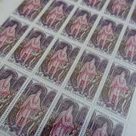 |
| eBay | 1953 US Stamps Scott 1020 3¢ Block of 4 | eBay | 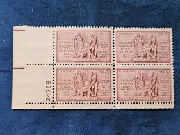 |
| eBay | Definitives: Fatherland, Religion, Monarchy and the Constitution-CANCELLED G(I)- | eBay | 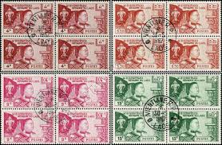 |
| eBay | DDR EAST GERMANY Mi. #MH 1a1 scarce mint MNH stamp booklet! (2) CV $145.00 | eBay | 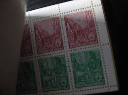 |
| eBay | PHILIPPINES 1898/99 REVENUE stamp 25c BLOCK of 10 never hinged toned gum | eBay | 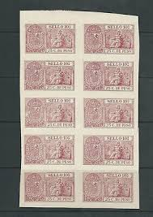 |
| eBay | Lot of 64 1950's Postage Stamps | eBay | |
| eBay | ITALY 1950-1958 Select 19 Pcs Stamps, 7 MLH, 12 Used LH, See Photos | eBay | |
| eBay | US 3¢ stamp SC #1020 Louisiana Purchase plate block MNH 1953 | eBay | |
| palaceoftransformation.com | VATICAN CITY 1946 Pope Pius XII Maximum Card Collectible Stamps VINTAGE Stamp Co - palaceoftransformation.com | |
| eBay | Italy Scott 263 used | eBay | |
| eBay | italy)1923 Sc 143/6 set,perf 14 MH v336 | eBay | |
| eBay | italy)1923 Sc 143/6 set propaganda Fide,MH w810 | eBay | |
| eBay | ITALY 1947 "A.M.G. F.T.T." 100L OVPT PAIR (JF-F) | eBay | |
| eBay | EARLY FRANCE LOT ON SMALL STOCK PAGE (BOTH SIDES) GREAT COLLECTION | eBay | |
| eBay | LAOS Singles 1959 Complete Set Sc#52-55 Used🔥King Sisavang-Vong 🔥VF | eBay |